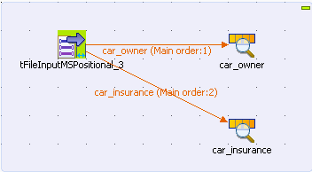
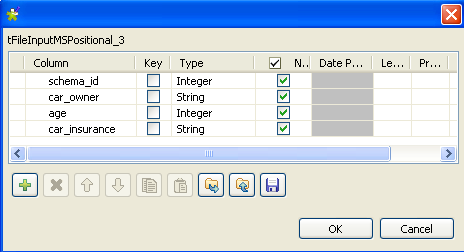

|
Famille du composant |
File/Input | |
|
Fonction |
Le composant tFileInputMSPositional permet de lire des schémas multiples à partir d’un fichier positionnel. | |
|
Objectif |
Le tFileInputMSPositional ouvre le fichier multi structure complexe, en lit la structure (schémas) puis utilise des liens de type Row pour envoyer les champs, tels qu’ils ont été définis dans les différents schémas, vers les composants suivants dans le Job. | |
|
Basic settings |
Property type |
Peut être Built-in ou Repository. |
|
|
|
Built-in : Propriétés utilisées ponctuellement. |
|
|
|
Repository : Sélectionnez le fichier dans lequel sont stockées les propriétés du composant. Les champs suivants sont alors pré-remplis à l’aide des données collectées. |
|
|
File Name |
Chemin d’accès et nom du fichier, et/ou variable à traiter. Pour plus d’informations concernant l’utilisation et la définition de variables, consultez le Guide utilisateur de Talend Open Studio. |
|
|
Row separator |
Chaîne de caractères (ex : “\n” sous Unix) séparant les lignes. |
|
|
Header Field Position |
Position de la chaîne de caractères identifiant les différents schémas. |
|
|
Records |
Schema : définissez autant de schémas que nécessaire. Header value : valeur de la chaîne de caractères identifiant les différents schémas. Pattern : Chaîne de caractères représentant la longueur de chacune des colonnes du schéma correspondant, séparées par des virgules. Vérifiez que les valeurs définies dans ce champ sont cohérentes avec le schéma défini. Reject incorrect row size : Cochez les cases des schémas pour lesquels vous n’acceptez pas une taille de ligne incorrecte. Parent row: Sélectionnez la ligne parent dans la liste déroulante. Par défaut, il s'agit d'<Empty>. Parent key column : Saisissez le nom de la colonne clé parente. Key column : Saisissez le nom de la colonne clé. |
|
|
Skip from header |
Nombre de lignes à ignorer au début du fichier. |
|
|
Skip from footer |
Nombre de lignes à ignorer à la fin du fichier. |
|
|
Limit |
Nombre maximal de lignes à traiter. Si Limit = 0, aucune ligne ne sera lue ni traitée. |
|
|
Die on parse error |
Décochez cette case pour passer les lignes contenant des erreurs de parse et terminer le traitement avec les lignes sans erreur. |
|
|
Die on unknown header type |
Décochez cette case pour passer les lignes dont le type d’en-tête est inconnu et terminer le traitement avec les lignes sans erreurs. |
|
Advanced settings |
Process long rows (needed for processing rows longger than 100,000 characters wide) |
Cochez cette case afin de pouvoir traiter de longues lignes (ceci est nécessaire pour traiter des lignes contenant plus de 100 000 caractères). |
|
|
Advanced separator (for numbers) |
Cochez cette option pour modifier les séparateurs utilisés pour les nombres : Thousands separator : définissez le séparateur utilisé pour les milliers. Decimal separator : définissez le séparateur utilisé pour les décimaux. |
|
|
Trim all columns |
Cochez cette case pour supprimer les espaces en début et en fin de champ dans toutes les colonnes. |
|
|
Validate date |
Cochez cette case pour vérifier strictement le format de la date par rapport au schéma d’entrée. |
|
|
Encoding |
Sélectionnez l’encodage à partir de la liste ou sélectionnez Custom et définissez-le manuellement. Ce champ est obligatoire pour la manipulation des données de base de données. |
|
|
tStatCatcher Statistics |
Cochez cette case pour collecter les métadonnées de process du Job, aussi bien au niveau du Job qu’au niveau de chaque composant. |
|
Utilisation |
Utilisez ce composant pour lire un fichier positionnel multi-schéma et servez-vous d’une valeur spécifiant l’emplacement pour séparer les champs. Ce composant permet de créer un flux de données à l’aide d’un lien Row > Main, ainsi que de créer un flux de rejet avec un lien Row > Reject filtrant les données dont le type ne correspond pas au type défini. Pour un exemple d’utilisation de ces deux liens, consultez la section intitulée « Scénario 2 : Extraire les données XML erronées dans un flux de rejet » du composant tFileInputXML. | |
Le scénario suivant permet de lire des données d'un fichier positionnel contenant deux schémas. Le fichier positionnel se présente comme suit :
schema_1 (car_owner):schema_id;car_make;owner;age schema_2 (car-insurance):schema_id;car_owner;age;car_insurance 1bmw John 45 1bench Mike 30 2John 45 yes 2Mike 50 No
Déposez un tFileInputMSPositional et deux composants tLogRow de la Palette dans l'espace de modélisation graphique.
Renommez les deux composants tLogRow, respectivement car_owner et car_insurance.

Double-cliquez sur le tFileInputMSPositional pour afficher sa vue Basic settings et paramétrer ses propriétés.

Dans le champ File name/Stream, saisissez le chemin d'accès à votre fichier d'entrée. Vous pouvez également cliquer sur le bouton [...] pour parcourir votre système et sélectionner votre fichier.
Dans le champ Header Field Position, saisissez la position de début et de fin de l'en-tête pour l'identifiant du schéma dans le fichier d'entrée, 0-1, dans ce cas, puisque le premier caractère de chaque ligne est l'identifiant du schéma.
Cliquez deux fois sur le bouton [+] pour ajouter deux lignes à la table Records.
Cliquez sur la cellule dans la colonne Schema pour afficher le bouton [...].
Cliquez sur le bouton [...] pour ouvrir la boîte de dialogue de nommage du schéma.

Saisissez le nom du schéma et cliquez sur OK.
Le nom du schéma apparaît dans la cellule et l'éditeur du schéma s'ouvre.

Définissez le schéma car_owner, contenant quatre colonnes : schema_id, car_make, owner et age.
Répétez ces étapes pour définir le schéma car_insurance, contenant quatre colonnes : schema_id, car_owner, age et car_insurance.
Connectez le composant tFileInputMSPositional au car_owner à l'aide d'un lien Row > car_owner et au composant car_insurance à l'aide d'un lien Row > car_insurance.
Dans la colonne Header value, saisissez l'identifiant du schéma, 1 pour le schéma car_owner et 2 pour le schéma car_insurance.
Dans la colonne Pattern, saisissez la longueur de chaque champ du schéma, c'est-à-dire le nombre de caractères, 1,8,10,3 pour le schéma car_owner et 1,10,3,3 pour le schéma car_insurance dans ce scénario.
Dans le champ skip from header, saisissez le nombre de lignes d'en-tête à ignorer, 2 dans cet exemple, car les deux premières lignes décrivent les deux schémas et ne fournissent aucune valeur.
Sélectionnez Table (print values in cells of a table) dans la zone Mode des composants car_owner et car_insurance.
Appuyez sur les touches Ctrl+S afin de sauvegarder votre Job.
Appuyez sur F6 ou cliquez sur le bouton Run de la vue Run pour exécuter le Job.

Le fichier est lu ligne par ligne selon les valeurs de longueur définies dans le champ Pattern et écrit en sortie dans deux tables ayant deux schémas différents.